Where Are the USDA Certified Organic Farms in the U.S.?
organic farms
by certified scopes


see farms certified
by specific date
Compare
2016 Election Results of the
Top 10 States that Buys Organic
Ratio of Organic Farms
Per 10k Farms
Reset